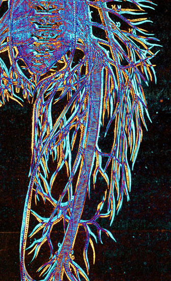
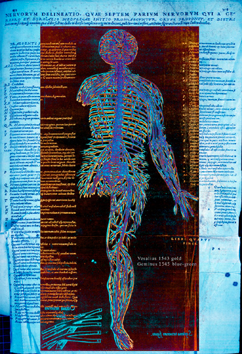

Vesalius's attack on Geminus: some new evidence
In the China root
letter of 1546 Vesalius castigated the author of the Compendiosa (Geminus) for
reducing the size of his illustrations and for misrepresenting the courses of the
vessels and nerves. It is interesting to enquire whether these complaints were justified.
It is true that Geminus's illustrations are smaller than the largest of Vesalius's,
which are printed on fold-out sheets, but the difference in sizes of the images-teaching.is not very great.
To examine the more demanding question of whether the courses of the vessels and
nerves are different in Geminus than in Vesalius, one of us (IMLD) devised a method
of making a direct visual comparison between the plates. This relies on the ability
of modern image-processing software to superpose images while keeping the identity
of each distinguishably separate. Briefly, the images from Vesalius and Geminus are
scaled to be of the same height and, if necessary (some of Geminus's images are
left-right inversions of those of Vesalius) the Geminus image is 'flipped' left to right.
The line images are then given false colours, greenish-blue for Vesalius and brick-red
for Geminus and superposed as nearly as possible. The result is that areas which occur
only in Geminus appear blue-green, those present only in Vesalius are gold, and where
the images overlap the result is red or blue. Thus, the complex and similar paths of
the lines in the two images can be distinguished and their relationships examined1.
The two versions of Vesalius's large fold-out illustration of the course of the nerves
were compared.

It is apparent that, although there are many areas where the images do not
exactly superimpose, the paths of the nerves are very closely similar indeed
and that for virtually every branch in the one image there is one closely
corresponding in the other. The failure of exact superposition is caused by multiple,
small, local differences in orientation and scale. Since, in any case, the diagrams
represent typical paths for the branches and there are small differences between their
courses in individual subjects these differences between Vesalius and Geminus do not
represent consistent or significant differences in the anatomy. Far from Geminus
having misrepresented Vesalius he has reproduced the courses of the nerves as shown
by Vesalius remarkably faithfully. If one compares the cerebral and hepatic blood
vessels in the same way the conclusion is the same.

[Left click for larger image (2Mb)]
It seems very probable that Vesalius had not seen Geminus's work and was criticising
it on the basis of second-hand reports and perhaps of information about the overall
size of the largest sheets in his and in Geminus's books. The claim that the course
of the nerves and vessels shown in the original woodcuts has been misrepresented in the
engraved copies is unfounded.
1. Donaldson, IML Two States of Some Plates in the Compendiosa of Thomas Geminus (1545) The Library 2010 11: 89-104. http://dx.doi.org/10.1093/library/11.1.89
© 2005 Edinburgh University Library / Royal College of Physicians of Edinburgh
www.lib.ed.ac.uk
05 April 2006
|


{kind=link}